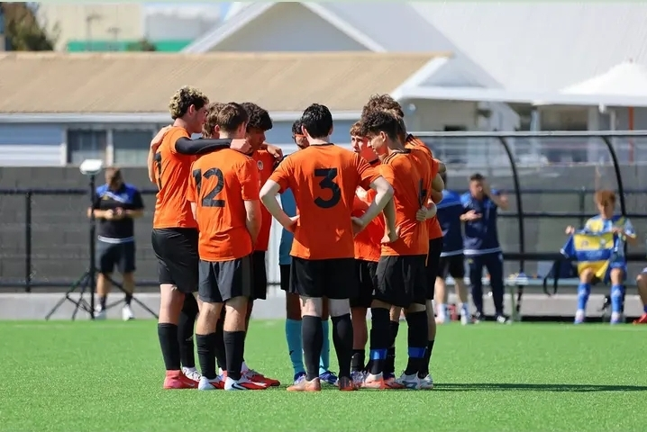
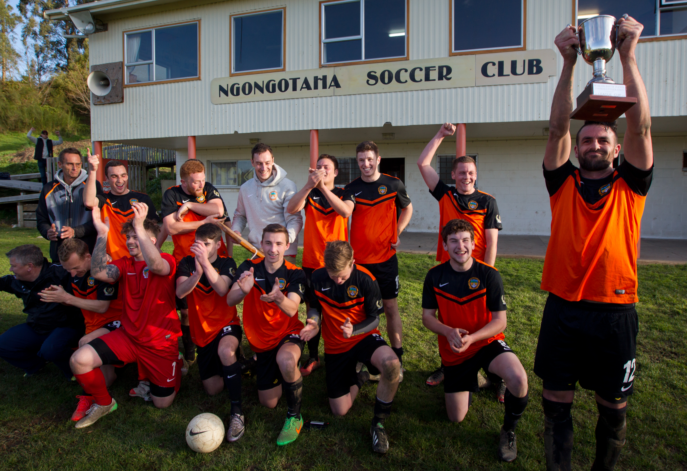

Ngongotahā's senior football programme is built around
competitive football, strong standards and giving players
the opportunity to compete across three senior teams.
Men's First Team
A New Chapter
Following the 2026 season, Ngongotahā's Men's First Team
enters a new chapter in the WaiBOP regional football
structure for 2027.
The focus remains the same: compete, develop and build
a First Team capable of representing Ngongotahā with
pride and ambition.
With the national football structure changing from 2027,
the regional leagues will form an important part of the
pathway for clubs competing to reach the new national
level.
2027
A New Era For New Zealand Football
New Zealand Football is introducing a new fully national,
club-based men's competition from 2027.
The new Dettol National League will feature 12 men's clubs
in a full winter league, followed by a finals series and
Grand Final.
For Ngongotahā, the 2027 season begins in the WaiBOP
regional competition as we work towards building the
next chapter of senior football at the club.
Senior Football
Our Senior Teams

Men's First Team
Our First Team
Our flagship senior men's side competing in the
WaiBOP regional football structure.
The First Team represents the highest level of
men's football at Ngongotahā.

Senior Football
Our Bay Teams
Ngongotahā also fields two competitive Bay League
sides, giving more players the opportunity to play
senior football.
Bay 1 provides competitive senior
football, while Bay 4 is our
Over 35s and social side.
Coaching Staff
The Coaching Team
Our senior football programme is supported by a
dedicated coaching team focused on developing players
and maintaining high standards across the club.
First Team
Marvin Koeppen
Head Coach
UEFA B-Licensed coach focused on strategy,
performance and player development.
First Team
Ciaran
Assistant Coach
Supports tactical planning, training and
individual player development.
Reserves
Brendan Squibb
Senior Coach
Focuses on player development and supporting
our young players development from youth into mens football.
Player Statistics
First Team Top Scorers
Leading goal scorers and latest results for the
Ngongotahā Men's First Team.
Loading the latest stats…
Bay Football
More Ways To Play
Our two Bay teams are an important part of Ngongotahā's
senior football programme, providing competitive football
for players across different ages and levels.
Bay 1 competes in the Bay League, while our Bay 4 side
operates as our Over 35s and social team.
Get Involved
Want To Play?
Whether you're looking to compete with the First Team,
play competitive Bay football or be part of our Over 35s
and social side, Ngongotahā AFC has a place for you.